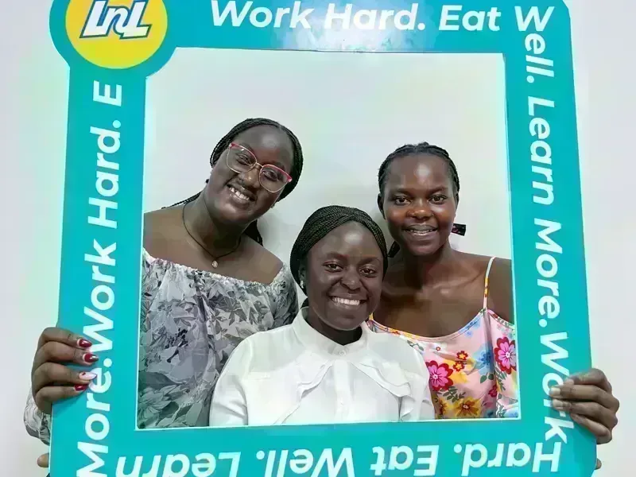
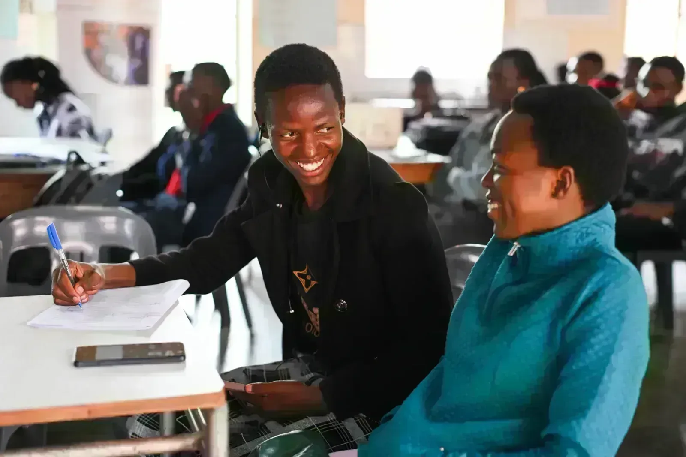
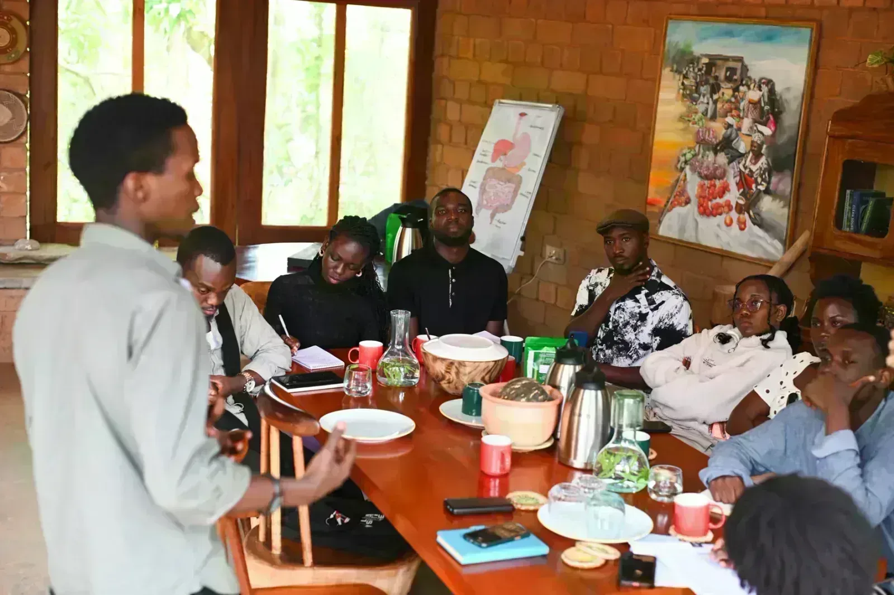

Discover how hidden costs affect university students in Uganda and why student support systems are essential for education success.
Read more: THE PRICE OF STUDYING: THE HIDDEN COSTS OF UNIVERSITY LIFE IN UGANDA
Learn And Lunch hosts the first Campus Food Security Summit, bringing students, universities and partners together to advance practical solutions to food insecurity in higher education.
22 October 2026 | Kampala, Uganda
On 21 October 2026, Learn And Lunch, in partnership with the Kampala International University (KIU) Guild Union, hosted the first Campus Food Security Summit, bringing together 337 students from 25 universities to address one of the most overlooked challenges in higher education: campus hunger.
Held at KIU Main Campus in Kansanga under the theme “Building Food-Secure Universities in Uganda,” the Summit brought together students, university leaders, government representatives, development partners and civil society organisations to examine how access to food shapes student wellbeing and academic success.
For Learn And Lunch, the Summit marked an important step in our mission to end campus hunger and build university environments where students can learn and thrive without worrying about their next meal.
Throughout the Summit, students spoke openly about rising food prices, limited access to nutritious meals and the financial pressures they face while pursuing their education.
Their experiences revealed that campus food insecurity extends beyond the availability of food. It is also about affordability, nutritional quality and the ability to access meals consistently and with dignity.
Students challenged universities and other stakeholders to recognise food security as an important part of student welfare and to consider practical responses to these challenges.
At Learn And Lunch, we believe that students should not have to navigate hunger in silence. Their experiences must inform the solutions we develop.

Moving beyond conversations, the Summit also spotlighted Millu, a campus meal access application presented by Kibalama Victor and Lawino Mercy.
Millu is designed to help university students discover participating restaurants near their campuses, explore available meals and plan how they access food throughout their university experience.
Through the application, students can find partner restaurants, check meal availability and use prepaid meal allocations known as Swipes to redeem meals at participating food outlets.
The system also supports sponsored meal allocations and allows students to track their remaining Swipes and meal usage.
Beyond students, Millu offers an important opportunity for parents and sponsors to better plan and support student feeding. By providing visibility into remaining meal allocations, the proposed experience can help families understand when additional meal support may be needed.
For participating restaurants, the platform provides tools to manage meal availability, validate redemptions and track meals served.
Millu brings together restaurant discovery, prepaid meal access and meal tracking in one system, exploring how technology can make campus feeding more organised, predictable and accessible.
For Learn And Lunch, the presentation reflected the kind of student-centred innovation we want to encourage: practical ideas that respond to the everyday realities of campus life.

One of the Summit's important contributions came from Ms. Mary Nabisere of UNICEF Uganda, who emphasised the relationship between nutrition, student wellbeing and educational outcomes.
Her contribution reinforced the understanding that educational success depends not only on access to classrooms and learning materials, but also on the conditions in which students live and study.
For us, this was an important reminder that addressing campus hunger is part of supporting students to succeed academically.
Universities have an opportunity to strengthen student welfare by recognising food security as an issue that deserves institutional attention and collaboration.

A significant highlight of the Summit was Ms. Maria Schiffer's commitment, through Body and Soil, to work with Learn And Lunch and university partners towards piloting Campus Food Innovation Labs.
The proposed labs aim to improve food environments within and around universities by bringing together students, food vendors, farmers, nutrition experts and university institutions.
They will explore practical approaches such as affordable and nutritious meal development, nutrition education, improved food storage, food waste reduction and small-scale campus food production.
Ms. Schiffer also expressed her willingness to support collaborative planning and connect potential partners to help advance the initiative.
For Learn And Lunch, the proposed labs offer an opportunity to move beyond identifying challenges towards testing solutions developed with university communities.

The Summit also provided an opportunity to engage government on student welfare and higher education policy.
Mr. Henry Semakula, representing the Commission of the Ministry of Education and Higher Learning Institutions, acknowledged the importance of stronger research evidence on campus food insecurity.
He highlighted ongoing policy development efforts and committed to taking the concerns and information raised during the Summit forward to inform that process.
He also indicated that student representatives would have opportunities to contribute as policy development progresses.
The discussions reinforced the importance of university leadership, government engagement, student participation and research in advancing meaningful responses to campus hunger.

The participation of 337 students from 25 universities demonstrated the importance of creating spaces where students can contribute to conversations about the challenges affecting their education.
But for Learn And Lunch, the success of the Summit will ultimately be measured by what follows.
We are committed to continuing our engagement with universities, strengthening student participation, generating evidence and working with partners to explore practical interventions, including the proposed Campus Food Innovation Labs.
We extend our appreciation to Kampala International University and the KIU Guild Union, alongside UNICEF Uganda, CEFROHT Ug, Nutri-Safe Communities, Reach A Hand Uganda, Alamaqi Charity Organisation, Body and Soil, and all the speakers, student leaders and partners who contributed to this first Summit.
Above all, we thank the students who shared their experiences and helped shape the conversation.
Starvation is not resilience. Hunger is not a virtue.
We believe no student should have to choose between getting an education and getting something to eat.
No Student Should Study Hungry.
Ending Campus Hunger. Unlocking Student Success.
PEOPLE
ALSO READ
Discover how hidden costs affect university students in Uganda and why student support systems are essential for education success.
Read more: THE PRICE OF STUDYING: THE HIDDEN COSTS OF UNIVERSITY LIFE IN UGANDA
Food insecurity affects students differently. Learn why a gender lens is essential for creating inclusive food security solutions in Uganda’s universities.
Read more: Food Security Through a Gender Lens: Building Inclusive Universities in Uganda
Discover why food security in universities is essential for student success in Uganda. Learn how Learn And Lunch is tackling campus hunger through research, advocacy, and student-led solutions.
Read more: Food Security in Universities: A Fundamental Pillar for Student Success in Uganda
On March 28, 2026, Learn And Lunch visited Body and Soil Africa in Mityana to explore a partnership tackling campus hunger — not through temporary food relief, but by empowering students with the knowledge and skills to become active participants in sustainable food systems
Read more: There Is No Revolution Without Education: Learn And Lunch Partners with Body and Soil